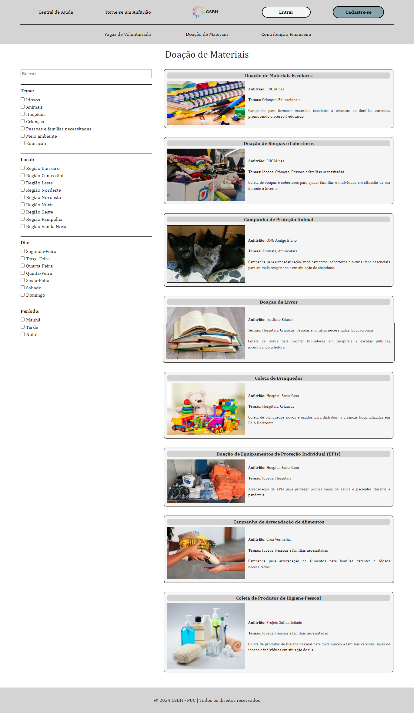

Introdução
Informações básicas do projeto como nome e membros da equipe.
Informações Gerais
- Projeto:Conexão Solidária
- Repositório GitHub: Projetos Sociais
- Membros da equipe:
Contexto
Detalhes sobre o espaço de problema, justificativas e os objetivos do projeto.
Problema
A dor que buscamos resolver é a desconexão entre voluntários e projetos sociais. Voluntários se sentem frustrados ao não encontrarem oportunidades de voluntariado que correspondam às suas paixões, habilidades e disponibilidade de tempo, enquanto projetos sociais lutam para encontrar voluntários qualificados para apoiar suas iniciativas. Muitas pessoas querem se envolver e ajudar em suas comunidades, mas a falta de uma plataforma eficaz de conexão impede que ambos os grupos atinjam seus objetivos. Nas entrevistas realizadas pelo grupo, tal cenário fica evidente. Uma das entrevistadas, Layssa, disse que, quando não se está inserido nesse meio, pode ser difícil encontrar vagas que se alinhem com o que a pessoa necessita, o que condiz com a fala de outra entrevistada, Beatriz, sobre a dificuldade de encontrar projetos que se encaixam em sua rotina. Já segundo o entrevistado Eli, o principal desafio em sua função é encontrar voluntários qualificados interessados em apoiar os projetos. Assim, podemos perceber que a ineficiência de comunicação evidenciada impacta no número de participantes em projetos sociais, fazendo com que ele seja menor do que tem o potencial de ser. Nossa aplicação será usada no dia a dia por qualquer indivíduo que tenha o interesse em ajudar o próximo, assim como por ONGs e anfitriões de projetos sociais que tornam isso possível, constituindo-se em uma ferramenta para conectá-los.
A desconexão entre projetos sociais e os voluntários que desejam ajudarxxxxxxxxxxxxxxxx.
Objetivos
O objetivo principal do trabalho é criar uma ferramenta que agrupe as informações dos projetos sociais vigentes, permitindo combater a desconexão entre voluntários e projetos sociais. Com isso, buscamos facilitar o acesso de possíveis voluntários a projetos que atendam a seus critérios específicos, como localização urbana e flexibilidade de horário, e ajudar os provedores dos projetos mencionados a aumentar o alcance das informações sobre seus projetos. Assim, poderemos impactar o número de participantes em trabalhos voluntários, a fim de que ele atinja seu potencial máximo.
Justificativa
A principal motivação para trabalhar com a aplicação escolhida é que o problema de desconexão ressaltado, que tem como efeito a incompletude da exploração do potencial da quantidade de indivíduos envolvidos em ações voluntárias, resulta, consequentemente, em recursos subutilizados, impacto limitado e perda de oportunidades valiosas para criar mudanças positivas na sociedade, uma vez que o voluntariado exerce papel central nesse quesito. Isso pode ser comprovado por dados presentes no artigo "A IMPORTÂNCIA DO TRABALHO VOLUNTÁRIO DAS ORGANIZAÇÕES PARA A SOCIEDADE E DA SOCIEDADE PARA A COMUNIDADE", por Amanda de Sousa Santos, Lídia de Freitas, José Abel de Andrade Baptista e Rosana Aparecida Bueno Novais, publicado no segundo ENGETEC (Encontro de Gestão e Tecnologia), realizado nos dias 3 e 4 de dezembro de 2019 em São Paulo. Segundo este artigo, o trabalho voluntário possui um papel muito importante na minimização do impacto da má distribuição de renda no Brasil, diante da desigualdade social vigente no país, e no aumento da inclusão social. Ademais, o artigo aponta a falta de projetos que se encaixem na disponibilidade de tempo das pessoas e a falta de conhecimento sobre projetos que estão ocorrendo como duas das principais causas para indivíduos não participarem de projetos sociais, o que corrobora as conclusões tiradas pelo grupo a partir das entrevistas realizadas, ressaltando, dessa maneira, a importância do alcance dos objetivos almejados pelo grupo com esta aplicação.
Busca-se xxxxxx criar uma plataforma que unifique interesses, eliminando lacunas que resultam em recursos subutilizados, impacto limitado e uma perda de oportunidades valiosas para criar mudanças positivas na sociedade e melhorar a convivência entre cidadãos de bem.
Público-alvo
O público-alvo do nosso projeto se dividem em dois grandes grupos: as pessoas e organizacões que precisam encontrar voluntários para seus projetos, que chamamos de anfitriões; e as pessoas que desejam voluntariar, mas encontram dificuldades de encontrar informações e se conectar a projetos, que chamamos de voluntários. Sobre os anfitriões-alvo, eles divulgam projetos que precisam de mão de obra, ou seja, tempo dos voluntários, e/ou projetos de arrecadação para algum fim específico. Sobre os voluntários-alvo, eles podem ser pessoas muito diferentes, mas, de forma genérica, não precisam ter grande conhecimento nem habilidades muito específicas, já que existem projetos sociais variados para todo tipo de capacidade. Utilizando dois exemplos: um CEO, muito ocupado, que gosta de apoiar trabalhos sociais, mas não tem tempo para se voluntariar, poderá ajudar os projetos com doação de recursos. Já uma aluna de graduação, que possui mais tempo livre, poderá encontrar e realizar projetos nesse tempo, se voluntariando neles pela nossa aplicação.
Concepção (Design Thinking)
Detalhes do processo de discovery do projeto.
Apresente o processo de discovery do projeto. Com foco na experiência do usuário, esse processo abrange a compreensão do contexto do problema e das características do usuário, a definição do problema, a geração de ideias, a prototipagem e a elaboração de uma proposta de solução
Processo de Design Thinking
O arquivo que se segue apresenta o resultado desse processo.
Apresente o processo de Design Thinking realizado pelo grupo e documentado por meio do software Miro. No documento apresentado, devem ser incluídos: (1) a matriz CSD, (2) o mapa de stakeholders, (3) as personas, (4) as respectivas propostas de valor e (5) o processo de ideação identificando as ideias levantadas e sua priorização.
Especificações do Projeto
Documentação das especificações do projeto.
Apresente as especificações do projeto, incluindo as histórias de usuário e os requisitos funcionais e não funcionais.
Histórias de Usuários
Com base na análise das personas foram identificadas as seguintes histórias de usuários:
Apresente aqui as histórias de usuário que são relevantes para o projeto de sua solução. As Histórias de Usuário consistem em uma ferramenta poderosa para a compreensão e elicitação dos requisitos funcionais e não funcionais da sua aplicação. Se possível, agrupe as histórias de usuário por contexto, para facilitar consultas recorrentes à essa parte do documento.
EU COMO...PERSONA |
QUERO/PRECISO...FUNCIONALIDADE
|
PARA...MOTIVO/VALOR |
|---|---|---|
| Ernesto Andrade | Cadastrar meus projetos no site | Para que eles sejam divulgados para os voluntários |
| Ana Oliveira | Poder consultar o background dos anfitriões > | Ter certeza de que minhas ações de ajuda comunitária serão focadas para uma instituição séria |
| Ana Oliveira | Poder avaliar minha experiência com os anfitriões > | Para fornecer informações reais para outros voluntários |
| Ernesto Andrade | Poder ter acesso à quantidade de voluntários que exibiram interesse no projeto | Para ajudar a organizar meus projetos |
| Pedro Silva | Poder favoritar projetos | Para poder me organizar e ter acesso fácil aos projetos que anteriormente me interessaram |
| Ana Oliveira | Poder pesquisar projetos de acordo com localização/horário | Para me auxiliar a encontrar projetos na minha região e em horários que tenho disponíveis |
Requisitos
As tabelas que se seguem apresentam os requisitos funcionais e não funcionais que detalham o escopo do projeto.
Com base nas Histórias de Usuário, enumere os requisitos da sua solução. Classifique esses requisitos em dois grupos:
- Requisitos Funcionais (RF): correspondem a uma funcionalidade que deve estar presente na plataforma (ex: cadastro de usuário).
- Requisitos Não Funcionais (RNF): correspondem a uma característica técnica, seja de usabilidade, desempenho, confiabilidade, segurança ou outro (ex: suporte a dispositivos iOS e Android).
Lembre-se que cada requisito deve corresponder à uma e somente uma característica alvo da sua solução. Além disso, certifique-se de que todos os aspectos capturados nas Histórias de Usuário foram cobertos.
Requisitos Funcionais
| ID | Descrição do Requisito | Prioridade |
|---|---|---|
| RF-001 | O sistema deve apresentar uma barra de busca que gere resultados a partir de palavras chave | ALTA |
| RF-002 | O sistema deve apresentar uma ferramenta de filtro com filtros diferentes para cada tipo de ação do voluntariado(cada um para uma tela diferente) | ALTA |
| RF-003 | O sistema deve conseguir abrir uma tela de um projeto específico quando o usuário clicar no card desse projeto | ALTA |
| RF-004 | O voluntariado deve poder favoritar projetos que o interessem | BAIXA |
| RF-005 | O sistema deve conter um botâo de participar nos cards de projeto para o voluntariado poder manifestar interesse de participar | ALTA |
| RF-006 | Cada projeto de voluntário ou de doação de material deve mostrar uma imagem, informações do anfitrião; uma descrição, a localização(mapa) e o horário do projeto | MÉDIA |
| RF-007 | Cada projeto de doação de dinheiro deve mostrar uma imagem, informações do anfitrião, descrição do projeto, descrição de onde o dinheiro vai ser aplicado e as informações bancárias para a doação | MÉDIA |
| RF-008 | O sistema deve conter uma tela de FAQ funcional com solucões para dúvidas frequentes | MÉDIA |
| RF-009 | Um usuário deve poder realizar cadastro no site criando login nome de usuário e senha | ALTA |
| RF-010 | Um usuário deve poder realizar login usando seu nome de usuário e senha cadastrados | ALTA |
| RF-011 | Um usuários deve conseguir se tornar anfitrião(parceiro) do site | BAIXA |
| RF-012 | O sistema deve possuir um card de perfil do voluntário com as categorias: Perfil; Favoritos; Meus projetos; Sair da conta | BAIXA |
| RF-013 | O sistema deve possuir um card de perfil do anfitrião com as categorias: Perfil; Cadastrar projeto; Projetos cadastrados; Minha avaliação; Sair da conta; | MÉDIA |
| RF-014 | O sistema deve conter uma tela da conta, que mostra as informações cadastradas do usuário e a possibilita alterações | ALTA |
| RF-015 | O sistema deve conter uma tela dos Favoritos, que mostra os projetos favoritados | BAIXA |
| RF-016 | O sistema deve conter uma tela dos Meus Projetos, que mostra para o usuário os projetos que ele participou e que deixa ele avaliar os anfitriões | MÉDIA |
| RF-017 | O sistema deve conter uma tela dos Projetos Cadastrados e Minha avaliação, que mostra para o anfitrião seus projetos cadastrados e que mostra sua avaliação | MÉDIA |
| RF-018 | O sistema deve conter uma tela que possibilite o anfitrião cadastrar novos projetos | MÉDIA |
Requisitos Não-Funcionais
| ID | Descrição do Requisito | Prioridade |
|---|---|---|
| RNF-001 | O sistema deve ser responsivo para rodar em um dispositivos móvel | MÉDIA |
| RNF-002 | O processo de desenvolvimento deve utilizar html, css e Javascript | ALTA |
| RNF-003 | O sistema deverá estar disponível 7/24 | ALTA |
| RNF-004 | Os dados dos voluntários e anfitriões devem ser protegidos | BAIXA |
| RNF-005 | Deve ser compatível com Windows, Linux e Mac | MÉDIA |
| RNF-006 | Será usado, em primeira instância, somente em Belo Horizonte | MÉDIA |
| RNF-007 | Deve processar requisições do usuário em no máximo 5 segundos | MÉDIA |
| RNF-008 | O sistema deve ser capaz de lidar com qualquer número de usuários sem perda de desempenho | BAIXA |
| RNF-009 | O sistema deve ser fácil de atualizar e manutenir | MÉDIA |
| RNF-010 | O sistema deve ser fácil de entender e utilizar | ALTA |
Projeto de Interface
Artefatos relacionados com a interface e a interacão do usuário na proposta de solução.
Apresente a ideia de interface que está sendo prevista para o projeto. Inclua os wireframes, o user/screen flow e o protótipo interativo.
User/Screen Flow e Protótipo interativo
Artefatos relacionados com a interface e a interacão do usuário na solução proposta.
O fluxo de usuário (User Flow) é uma técnica que permite
ao desenvolvedor mapear todo fluxo de telas do site ou
app. Essa técnica funciona para alinhar os caminhos e as
possíveis ações que o usuário pode fazer junto com os
membros de sua equipe.

Um protótipo interativo apresenta o projeto de interfaces
e permite ao usuário navegar pelas funcionalidades como se
estivesse lidando com o software pronto. Veja o exemplo a
seguir.
LINK PARA PROTÓTIPO INTERATIVO: https://www.figma.com/proto/xyBsdwnTYIJqUZxQ5Gx4Hn/Prot%C3%B3tipo-Projeto-TI_V1?type=design&node-id=16-42&t=TbbR5hJ0CY7x6C2M-1&scaling=min-zoom&page-id=0%3A1&starting-point-node-id=16%3A42&mode=design
Wireframes
Protótipo de telas do sistema em baixa fidelidade (rascunhos).
Os Wireframes são protótipos das telas da aplicação usados
em design de interface para sugerir a estrutura de um site
web e seu relacionamentos entre suas páginas. Um wireframe
web é uma ilustração semelhante ao layout de elementos
fundamentais na interface.


Metodologia
Detalhes sobre a organização do grupo e o ferramental empregado.
Nesta parte do documento, você deve apresentar a metodologia adotada pelo grupo, descrevendo o processo de trabalho baseado nas metodologias ágeis, a divisão de papéis e tarefas, as ferramentas empregadas e como foi realizada agestão de configuração do projeto via GitHub.
Coloque detalhes sobre o processo de Design Thinking e a implementação do Framework Scrum seguido pelo grupo. O grupo poderá fazer uso de ferramentas on-line para acompanhar o andamento do projeto, a execução das tarefas e o status de desenvolvimento da solução.
Ferramentas
Relação de ferramentas empregadas pelo grupo durante o projeto.
Liste as ferramentas empregadas no desenvolvimento do projeto, justificando a escolha delas, sempre que possível. Inclua itens como: (1) Editor de código, ferramentas de comunicação, ferramentas de diagramação, plataformas de hospedagem, entre outras.
| Ambiente | Plataforma | Link de Acesso |
|---|---|---|
| Processo de Design Thinking | Miro | Link para o Miro |
| Repositório de código | GitHub | Link para o GitHub |
| Hospedagem do site | Vercel | https://csbh.site |
| Protótipo Interativo | MavelApp ou Figma | Link para o Figma |
Gestão do Projeto
Divisão de papéis no grupo e apresentação da estrutura da ferramenta de controle de tarefas (Kanban).
Apresente a divisão de papéis e tarefas entre os membros do grupo. Informe quem é o Scrum Master, o Product Owner e os desenvolvedores. Informe também quem é o responsável pela documentação do projeto.
Apresente o quadro de gerenciamento do time (Kanban), seu formato e as experiências na utilização dessa ferramenta (GitHub Projects)
Sprint 1: As entrevistas foram feitas por Matheus e Sofia e realizamos toda a parte das etapas de desenvolvimento e exploração do Design Thinking no Miro em conjunto durante reuniões presenciais ou virtuais. Para as partes da materialização dos wireframes e do protótipo interativo e da documentação do projeto, dividimos tarefas entre os integrantes do grupo, usando a técnica de Kanban. Sofia, Filipi e Joao ficaram responsáveis por elaborar os requisitos a partir das ideias selecionadas por todo o grupo e por produzir os wireframes e o protótipo interativo, enquanto Fernando, Matheus e Enzo ficaram responsáveis pela documentação, incluindo a atualização do documento no GitHub. Para que isso funcionasse, estávamos sempre em contato, ajudando uns aos outros e, no final, fizemos mais reuniões para fazer os ajustes necessários e montar a apresentação.
Sprint 2: Na Sprint 2, Sofia ficou responsável pela tela de "Vagas de Voluntariado" com barra de busca e filtros, João Ficou responsável pelo formulário de cadastro de novo projeto, Fernando ficou responsável pela tela de "Central de Ajuda", Enzo ficou responsável pela tela inicial com o carousel de imagens e o botão de "saiba mais", Filipi ficou responsável pelas telas de "Meus Projetos" do anfitrião e do voluntário e Matheus ficou responsável pela tela de detalhes de um projeto específico. Continuamos usando o Kanban para nos organizar, o GitHub para compartilhar partes do código que eram comuns a todas as páginas(como o Html e o Css dos menus), além de estar em contato pelo Discord.
Sprint 3: Na Sprint 3, Sofia ficou responsável pelas telas de "Doação de Materiais" e "Contribuição Financeira" com barras de busca e filtros, João Ficou responsável pelo formulário de configuração das informações do voluntário, Fernando ficou responsável por tela de detalhes de uma dúvida da tela de "Central de Ajuda" e uma barra de buscas nessa tela , Enzo ficou responsável pelo formulário de configurações do anfitrião, Filipi ficou responsável pela tela de "Favoritos" do voluntário e Matheus ficou responsável pelo botão de "favoritar" na tela de detalhes de um projeto e pela integração do site com o Google Maps para a exibição da localização dos projetos cadastrados no sistema. Também utilizamos o Kanban nessa sprint e utilizamos o Discord para nos comunicar.
Sprint 4: Na Sprint 4, descobrimos que Fernando, Enzo e Matheus não haviam entregado suas funcionalidades das Sprints 2 e 3 conforme o solicitado. Aprendemos com isso que deveríamos ter feito melhor uso das ferramentas disponibilizadas pelo GitHub para acompanhar de fato o desenvolvimento do código dos integrantes do grupo, e não apenas nos basear no que cada um colocou no Kanban haver ter feito. Fernando, Enzo e Matheus foram dados uma segunda chance para entregar suas funcionalidades, mas como não o fizeram e não contribuíram com a entrega do trabalho, foram retirados do grupo. Sofia, João e Filipi distribuiram entre si as tarefas e trabalharam juntos para refazer as Sprints 2 e 3 dos integrantes que saíram do grupo, integrar as funcionalidaes da aplicação, fazer a parte de login, o vídeo e preencher a documentação do projeto. Para isso, usamos o Kanban, passamos tardes trabalhando juntos presencialmente e usamos o GitFlow para versionamento. Porém, como o grupo foi reduzido pela metade, precisamos reduzir um pouco o escopo do trabalho, o botão de "participar" para o voluntário que estaria na tela de detalhes de um projeto foi retirado, e, consequentemente, a tela de "Meus Projetos" do voluntário, onde ele avaliaria um anfitrião, também.
Controle de Versão
Estrutura do fluxo de trabalho no ambiente do GitHub.
Discuta como a configuração do projeto foi feita na
ferramenta de versionamento (GitHub). Exponha como a
gerência de tags, merges, commits e branchs é realizada.
Discuta como a gerência de issues foi realizada.

Nas Sprints anteriores, cada membro foi fazendo as alterações em suas partes do código utilizando seus repositórios pessoais forks da master. Na Sprint 4, utilizamos o GitFlow, que é um modelo alternativo de ramificação do Git, ou seja, um fluxo de trabalho muito utilizado para auxiliar no versionamento de códigos. Utilizamos as branches Master e Develop para nos organizar. Utilizamos muito a brach Develop como uma linha do tempo para os desenvolvimentos que ainda não estavam prontos, e posteriormente associamos tais funcionalidades à branch Master. Aprendemos o quanto o GitFlow é importante no sesenvolvimento do projeto e pretendemos utilizá-lo desde o início em projetos futuros.
Solução
Esta seção apresenta todos os detalhes da solução criada no projeto.
Apresente cada uma das funcionalidades que a aplicação fornece tanto para os usuários quanto aos administradores da solução.
Inclua, para cada funcionalidade, itens como: (1) titulos e descrição da funcionalidade; (2) Estrutura de dados associada; (3) o detalhe sobre as instruções de acesso e uso.
Video do Projeto
O vídeo a seguir traz uma apresentação do problema que a equipe está tratando e a proposta de solução.
O video de apresentação é voltado para que o público externo possa conhecer a solução. O formato é livre, sendo importante que seja apresentado o problema e a solução numa linguagem descomplicada e direta.
Utilize o recurso de compartilhamento via embed e inclua o vídeo logo abaixo.
...... COLOQUE AQUI O SEU VIDEO ......
Funcionalidades
Esta seção apresenta as funcionalidades da solução.
Apresente cada uma das funcionalidades que a aplicação fornece tanto para os usuários quanto aos administradores da solução.
Inclua, para cada funcionalidade, itens como: (1) titulos e descrição da funcionalidade; (2) Estrutura de dados associada; (3) o detalhe sobre as instruções de acesso e uso.
Funcionalidade 1 - Cadastro de usuário
Permite a criação de uma conta como usuário(voluntários) no sistema.
- Estrutura de dados: usuarios
-
Instruções de acesso:
- Abra o site
- Escolha a opção Cadastre-se
- Preencha os campos
Funcionalidade 2 - Torne-se um anfitrião
Permite a criação de uma conta como anfitrião(criador de projetos) no sistema.
- Estrutura de dados: anfitrioes
-
Instruções de acesso:
- Abra o site
- Escolha a opção Torne-se um anftirião
- Preencha os campos
Funcionalidade 3 - Central de Ajuda
Mostra as principais dúvidas e, se efetuado o login, permite avalia-las, para controle dos administradores.
- Estrutura de dados: duvidas
-
Instruções de acesso:
- Abra o site
- Pode ou não ter efetuado o login
- Escolha a opcão Central de Ajuda
- Para avaliar, precisa estar logado, e escolher a opção
Funcionalidade 4 - Tela de Vagas de voluntariado
Mostra os projetos, que precisam de voluntários ativos, disponibilizados no site. Possui filtros para Tema, Local, Dia, Período. Possui barra de busca.
- Estrutura de dados: volunt
-
Instruções de acesso:
- Abra o site
- Pode ou não ter efetuado o login
- Escolha a opcão Vagas de voluntariado
Funcionalidade 5 - Tela de Doação de Materiais
Mostra os projetos, que precisam de doação de materiais, disponibilizados no site. Possui filtros para Tema, Local, Dia, Período. Possui barra de busca.
- Estrutura de dados: doacoes
-
Instruções de acesso:
- Abra o site
- Pode ou não ter efetuado o login
- Escolha a opcão Doação de materiais

Funcionalidade 6 - Tela de Contribuição Financeira
Mostra os projetos, que precisam de contribuição financeira, disponibilizados no site. Possui filtro para Tema. Possui barra de busca.
- Estrutura de dados: cfinanceira
-
Instruções de acesso:
- Abra o site
- Pode ou não ter efetuado o login
- Escolha a opcão Contribuição Financeira
Funcionalidade 7 - Tela de um projeto específico
Mostra os detalhes de um projeto específico. Se efetuado o login, é possível favoritar. Detalhes de Vagas de Voluntariado e Doação de Materiais: nome do anfitrião, informações do anfitrião, contato, descrição do projeto, horário, dias e localização(com o mapa). Detalhes de Contribuição Financeira: nome do anfitrião, informações do anfitrião, contato, descrição do projeto, informações bancárias.
- Estrutura de dados: volunt doacoes cfinanceira
-
Instruções de acesso:
- Abra o site
- Pode ou não ter efetuado o login
- Escolha a opcão Vagas de voluntariado ou Doações de Materiais ou Contribuição Financeira
- Clique em algum projeto
- Para favoritar, precisa estar logado, e clicar no botão Favoritar
Funcionalidade 8 - Configurações do Anfitrião
Permite ao anfitrião alterar seus dados: Nome, E-mail, Sobre mim e Senha.
- Estrutura de dados: anfitrioes
-
Instruções de acesso:
- Abra o site
- Efetue o login como anfitrião
- Acesse o menu no canto direito superior
- Escolha Configurações
- Altere o que desejar
- Aperte em Salvar Alterações
Funcionalidade 9 - Novo Projeto
Permite ao anfitrião cadastrar um novo projeto.
- Estrutura de dados: anfitrioes volunt doacoes cfinanceira
-
Instruções de acesso:
- Abra o site
- Efetue o login como anfitrião
- Acesse o menu no canto direito superior
- Escolha Novo Projeto
- Selecione o tipo de projeto(Trabalho Voluntário, Doação de Materiais, Contribuição Financeira)
- Preencha as informações necessárias
- Aperte em enviar
Funcionalidade 10 - Meus Projetos
Permite ao anfitrião visualizar os projetos fornecidos por ele e deletar caso queira.
- Estrutura de dados: anfitrioes volunt doacoes cfinanceira
-
Instruções de acesso:
- Abra o site
- Efetue o login como anfitrião
- Acesse o menu no canto direito superior
- Escolha Meus projetos
- Se quiser deletar aperte no X
Funcionalidade 11 - Configurações do usuário
Permite ao anfitrião alterar seus dados: Nome, E-mail e Senha.
- Estrutura de dados: usuarios
-
Instruções de acesso:
- Abra o site
- Efetue o login como usuário
- Acesse o menu no canto direito superior
- Escolha Configurações
- Altere o que desejar
- Aperte em Salvar Alterações
Funcionalidade 12 - Favoritos
Permite ao usuário vizualizar seus projetos favoritados e desfavoritar caso queira.
- Estrutura de dados: usuarios volunt doacoes cfinanceira
-
Instruções de acesso:
- Abra o site
- Efetue o login como usuário
- Acesse o menu no canto direito superior
- Escolha Favoritos
- Para desfavoritar, aperte no X
Estruturas de Dados
Descrição das estruturas de dados utilizadas na solução com exemplos no formato JSON.
Apresente as estruturas de dados utilizadas na solução tanto para dados utilizados na essência da aplicação quanto outras estruturas que foram criadas para algum tipo de configuração
Nomeie a estrutura, coloque uma descrição sucinta e apresente um exemplo em formato JSON.
Estrutura de Dados - Anfitriões
Registro dos anfitriões do sistema utilizados para login, para alterar informações na página de Configurações do Anfitrião e para armazenar os ids dos projetos cadastrados por tal anfitrião, afim de exibi-los na página de Meus Projetos
{
"id": "d220",
"nome": "PUC Minas",
"email": "pucminas@gmail.com",
"senha": "1111",
"info": "A Pontifícia Universidade Católica de Minas Gerais é uma instituição de ensino superior que promove projetos sociais focados na educação, inclusão e desenvolvimento comunitário. Com um forte compromisso com a responsabilidade social, a PUC Minas busca transformar vidas por meio de iniciativas voltadas para a comunidade.",
"id_meusProjetos": [
"1719684249689",
"1719684729790",
"1719685090152"
],
"id_duvidasAvaliadas": [
"3"
]
}
Estrutura de Dados - Usuários
Registro dos usuários(voluntários) do sistema utilizados para login, para armazenar os ids dos projetos favoritados, afim de exibi-los na página de Favoritos, e para alterar as informações na página de Configurações do Usuário
{
"id": "1c11",
"nome": "Sofia Grossi ",
"email": "sofiagrossi@gmail.com",
"senha": "0812",
"id_favoritos": [
"1719688499550",
"1719689687894",
"1719688875376",
"1719687427447",
"1719690502476"
],
"id_duvidasAvaliadas": [
"1",
"3",
"2"
]
}
Estrutura de Dados - Projetos Vagas de Voluntariado
Registro dos projetos, do tipo Trabalho Voluntário, no sistema, utilizados para mostrar os cards dos projetos, montar a página de detalhes de um projeto, para permitir a filtragem e busca de um projeto. Essa estrutura é gerada a partir do cadastro de novo projeto
{
"id": "1719685691353",
"temas": {
"opcoes": [
{
"nome": "Ambientais"
},
{
"nome": "Educacionais"
}
]
},
"imagem": "/assets/imagens/1719685691342.jpeg",
"anfitriao": "UFMG",
"id_anfitriao": "7ce5",
"nome": "Projeto Verde",
"resumo": "Iniciativa para promover sustentabilidade e educação ambiental em escolas públicas, incentivando práticas ecológicas e conscientização ambiental.",
"localizacao": "Avenida Otacílio Negrão de Lima 5000, Bairro São Luiz",
"dia": {
"opcoes": [
{
"nome": "Quarta-Feira"
},
{
"nome": "Quinta-Feira"
},
{
"nome": "Sábado"
}
]
},
"horario": "8:00 - 10:00 e 18:00 - 19:30",
"periodo": {
"opcoes": [
{
"nome": "Manhã"
},
{
"nome": "Noite"
}
]
},
"local": {
"opcoes": [
{
"nome": "Região Pampulha"
}
]
}
}
Estrutura de Dados - Projetos Doações de Materiais
Registro dos projetos, do tipo Doação de Materiais, no sistema, utilizados para mostrar os cards dos projetos, montar a página de detalhes de um projeto, para permitir a filtragem e busca de um projeto. Essa estrutura é gerada a partir do cadastro de novo projeto
{
"id": "1719684729790",
"temas": {
"opcoes": [
{
"nome": "Crianças"
},
{
"nome": "Educacionais"
}
]
},
"imagem": "/assets/imagens/1719684729780.jpg",
"anfitriao": "PUC Minas",
"id_anfitriao": "d220",
"nome": "Doação de Materiais Escolares",
"resumo": "Campanha para fornecer materiais escolares a crianças de famílias carentes, promovendo o acesso à educação.",
"localizacao": "Rua Érico Veríssimo 520, Bairro Rio Branco",
"dia": {
"opcoes": [
{
"nome": "Terça-Feira"
},
{
"nome": "Quinta-Feira"
},
{
"nome": "Sexta-Feira"
}
]
},
"horario": "9:30 - 17:00",
"periodo": {
"opcoes": [
{
"nome": "Manhã"
},
{
"nome": "Tarde"
}
]
},
"local": {
"opcoes": [
{
"nome": "Venda Nova"
}
]
}
}
Estrutura de Dados - Projetos Contribuição Financeira
Registro dos projetos, do tipo Contribuição Financeira, no sistema, utilizados para mostrar os cards dos projetos, montar a página de detalhes de um projeto, para permitir a filtragem e busca de um projeto. Essa estrutura é gerada a partir do cadastro de novo projeto
{
"id": "1719686596838",
"temas": {
"opcoes": [
{
"nome": "Hospitais"
},
{
"nome": "Pessoas e famílias necessitadas"
}
]
},
"imagem": "/assets/imagens/1719686596833.jpg",
"anfitriao": "UFMG",
"id_anfitriao": "7ce5",
"nome": "Campanha de Apoio aos Hospitais Públicos",
"resumo": "Arrecadação de fundos para comprar equipamentos médicos e insumos para hospitais públicos em áreas carentes.",
"ibancarias": "Chave do pix CPF: 987.654.321-00"
}
Estrutura de Dados - Dúvidas
Registro das dúvidas, utilizado pelos administradores para controlar a Central de ajuda, alterando as informções disponíveis nessa tela, a partir do feedback dos botões de "Ajudou" e "Não Ajudou"
{
"id": "1",
"titulo": "Como achar projetos que se alinham com minhas disponibilidades?",
"texto": "Clique nos botões do menu de \"Vagas de voluntariado\", \"Doação de Material\" ou \"Contribuição Financeira\" (dependendo do tipo de projeto procurado) e utilize a barra de busca e os filtros para selecionar apenas os projetos que se encaixam em suas disponibilidades.",
"ajudou": 1,
"naoAjudou": 0
}
Estrutura de Dados - Imagens Apresentação
Registro das imagens, utilizadas para controlar as imagens presentes no carosel da página inicial
{
"id": "1",
"urlImagem": "assets/imagens/v1.jpg"
}
Módulos e APIs
Esta seção apresenta os módulos e APIs utilizados na solução.
Apresente os módulos e APIs utilizados no desenvolvimento da solução. Inclua itens como: (1) Frameworks, bibliotecas, módulos, etc. utilizados no desenvolvimento da solução; (2) APIs utilizadas para acesso a dados, serviços, etc.
Fonts:
- Icons Font Face - https://fontawesome.com/
Scripts:
- Bootstrap 4 - http://getbootstrap.com/
- CORS - https://developer.mozilla.org/pt-BR/docs/Web/HTTP/CORS
- Express - https://expressjs.com/pt-br/
- Http-proxy-middleware - https://www.npmjs.com/package/http-proxy-middleware
- Json-server - https://www.npmjs.com/package/json-server
- Concurrently - https://www.npmjs.com/package/concurrently
- Multer - https://www.npmjs.com/package/multer
- API Google Maps - https://developers.google.com/maps/documentation/javascript?hl=pt-br
FAQ
Perguntas e respostas comuns associadas ao projeto.
Apresente uma lista de perguntas e respostas comuns associadas ao projeto. Inclua perguntas como: (1) detalhes de acesso e uso do projeto; (2) informações sobre a instalação e configuração da aplicação; (3) questões sobre a manutenção da aplicação; (4) detalhes sobre a integração da aplicação com outros sistemas; (5) questões sobre a segurança da aplicação.
Referências Bibliográficas
Esta seção apresenta as referências bibliográficas utilizadas no projeto.
Apresente as referências bibliográficas utilizadas no projeto. Inclua itens como: (1) livros, artigos, tutoriais, etc. utilizados no desenvolvimento da solução; (2) links para sites, blogs, etc. utilizados no desenvolvimento da solução.
Artigo usado na dezcrição do contexto do problema("A IMPORTÂNCIA DO TRABALHO VOLUNTÁRIO DAS ORGANIZAÇÕES PARA A SOCIEDADE E DA SOCIEDADE PARA A COMUNIDADE").
Usamos o site da Worldpackers como referência para o menu e para as telas de cadastro e o site da Lego como referência para os filtros.